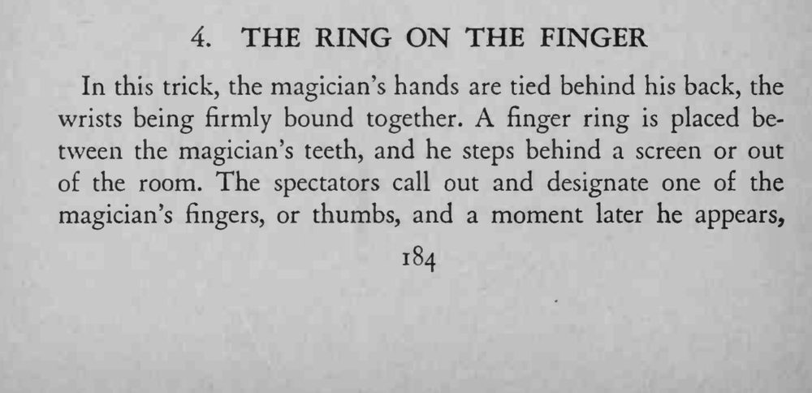
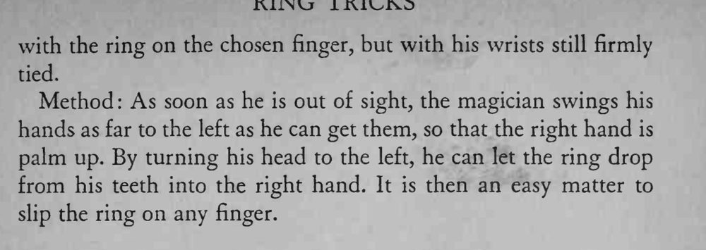

魔术师双手反绑、嘴里咬着一枚戒指走到屏风后；观众任选他的一根手指，他再出现时戒指正戴在那根手指上，双手却始终绑得牢牢的。
需要肩腕柔韧；练习时先摸准戒指从齿间落入右手的位置。


In this trick, the magician's hands are tied behind his back, the wrists being firmly bound together. A finger ring is placed between the magician's teeth, and he steps behind a screen or out of the room. The spectators call out and designate one of the magician's fingers, or thumbs, and a moment later he appears, with the ring on the chosen finger, but with his wrists still firmly tied. Method As soon as he is out of sight, the magician swings his hands as far to the left as he can get them, so that the right hand is palm up. By turning his head to the left, he can let the ring drop from his teeth into the right hand. It is then an easy matter to slip the ring on any finger.